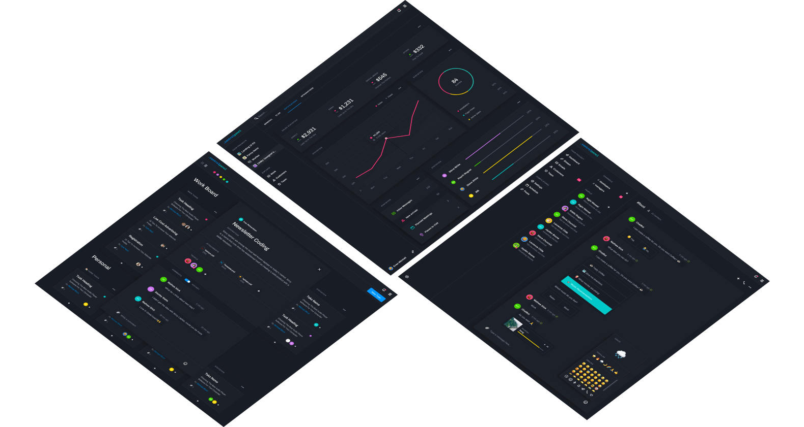
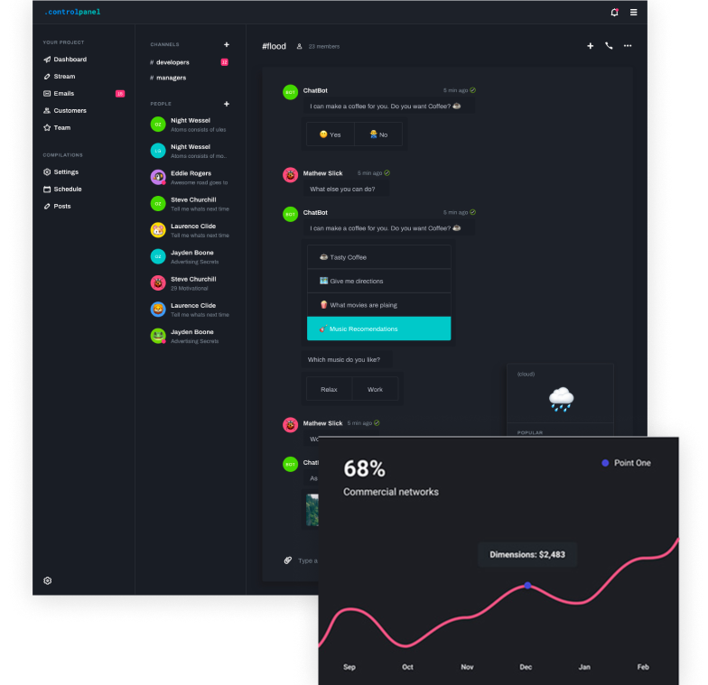

Work at the speed of thought
Most calendars are designed for teams. Slate is designed for freelancers who want a simple way to plan their schedule.

FEATURES
Most calendars are designed for teams. Slate is designed for freelancers who want a simple way to plan their schedule.
